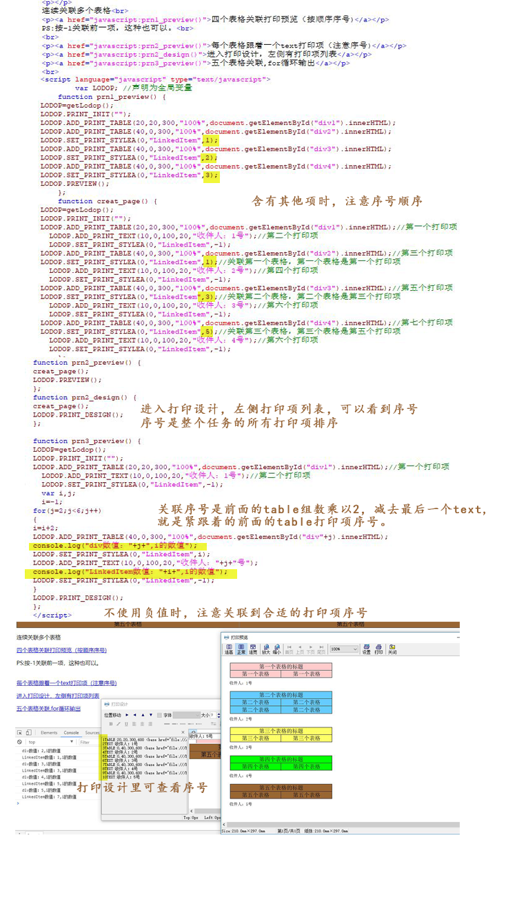

LODOP多个表格带表格页脚关联
之前的博文的关联是比较简单的，有时候需要用到多个表格，每个表格下方紧跟着某个内容，而表格之间又连续关联这种情况。这时候要注意关联的序号是否正确，是否关联到了正确的打印项。
简短问答：
1.多个表格连续关联，重叠了
参考lodop技术手册 set_print_stylea的的第一个参数的解释，排查关联的序号是否正确。
从init到print是一个任务，任务里所有打印项都参与排序，调试JS，排查关联序号是否正确。
2.多个表格连续关联，每个表格下方紧跟着某个的打印项，出现了重叠。
（1）参考lodop技术手册 set_print_stylea的的第一个参数的解释，调试JS，排查关联的序号是否正确。
（2）把紧跟着的打印项和表格打印项合成一个，用add_print_htm输出，这样紧跟着的打印项和table本身合成了一个打印项，关联的时候只连续关联每个htm打印项就行了。
注意紧跟着表格的打印项也是打印项，也会参与排序，从init到print是一个任务，任务里所有打印项都参与排序。
--简短问答结束----
如图，多个table连续关联，只有table打印项的时候，直接table2关联table1，table3关联table2,可以按照序号关联，也可以用-1进行连续关联，-1就是紧跟着的前面的打印项。
但是如果不只是有table，还需要每个table有自己关联的页脚，那么关联就不是序号1,2，3,4这种了，连续关联也不是-1了，-1代表紧跟着的前面的打印项，table之间有其他打印项，就是-2了。
如果要不用负数的，想用序号的：
没有table自己关联的页脚的情况下，可以直接table2关联table1，table3关联table2,这样，关联序号是1,2,3，4.....
如果中间有其他打印项存在，想用整个顺序的序号的情况下，就需要调试JS，排查设置合适的序号，如果关联的打印项不对，会出现一些问题。
如图，第二个打印预览中，为了观察方便，对代码进行了些格式调整，对紧跟着table的text打印项进行了缩进，会更直观一些。
图中可以看出，一个table紧跟后面紧跟着一个text，table高度不定，text总是紧跟着一定的距离。这里面有两种关联，一个是所有table形成的关联串，一个是每个table和它下方的小text的小关联。
想要每个table直接间距相同，table之间连续关联，这时候序号是：
第一个table前面没有打印项，不需要关联。
第二个table关联第一个table，第二个table关联第一个打印项。
第三个table关联第二个table，第三个table关联第三个打印项。
进入打印设计，打开左侧的打印项列表，可以查看到打印项的序号，查看每个table是否关联到合适的打印项。
如果table非常多，也可以用循环。
循环可先找序号规律，然后console.log进行调试排查，排查序号是否正常。
如果是一个table后面紧跟着一个text这种，可以把table和text看做一组。
1.第一个table前面没有打印项，不需要关联。
2.第二个table前面，前面有一组table+text的，两个打印项，减去最后一个text打印项，就是紧跟着的前面的table，也就是2-1=1,关联序号是1.
3.第三个table前面，有两组table+text的，2乘以2是4,减去最后一个text打印项，就是紧跟着的前面的table，4-1=3，关联序号是3.
4.第四个table，前面有三组，3乘以2=6.6-1=5，关联序号是5。
以此类推，关联序号是前面的table组数乘以2，减去最后一个text,就是紧跟着的前面的table打印项序号。
也就是四个打印项的时候关联序号是1,3,5。
循环打印时，这里设置了两个变量，一个是用来计数第几个table的，table盛放在div里，这里的div取名时，用的div1,div2，变量j用来计数table打印项。
第二个变量是用来计数关联值的，这里用变量i表示。
由于第一个table前面没有打印项，不必为这个打印项设置关联，所以这里单独把第一个table放在前面，不想给它加不必要的样式。
j计数table的div的，从2开始有table的连续关联，这里循环5个表格，所以一直循环到5，这里用小于6代表循环条件，循环到5的时候，再加1，就是6了，6不小于6，所以终止循环。
j是table计数，从2到5，除了第一个不需要设置关联的table外，都循环上。
i是设置关联序号的，循环到第5个table，看一下第五个table应该关联第几个打印项，第五个table前面有四组table+text组合，4*2=8，8-1=7,所以第i是到最后一个是7。
设置i=-1，然后在循环里加2，就能得到需要的序号：1,3,5,7。
如果不想初始值等于负数，也可以加判断，把第一个提出来，也可以用这个一个循环的。
测试例子地址：lodop打印测试,多个表格带表格页脚关联
测试代码：
<head> <meta http-equiv="Content-Type" content="text/html; charset=utf-8" /> <title>lodop打印测试</title> <script language="javascript" src="LodopFuncs.js"></script> </head> <body> <div id="div1"> <table border=1 cellSpacing=0 cellPadding=1 width="100%" style="border-collapse:collapse;background-color:#ffcccc;text-align:center;"> <tr> <td colspan="2">第一个表格的标题</td> </tr> <tr> <td>第一个表格</td> <td>第一个表格</td> </tr> </table> </div> <p></p> <div id="div2"> <table border=1 cellSpacing=0 cellPadding=1 width="100%" style="border-collapse:collapse;background-color:#66ccff;text-align:center;"> <tr> <td colspan="2">第二个表格的标题</td> </tr> <tr> <td>第二个表格</td> <td>第二个表格</td> </tr> <tr> <td>第二个表格</td> <td>第二个表格</td> </tr> </table> </div> <p></p> <div id="div3"> <table border=1 cellSpacing=0 cellPadding=1 width="100%" style="border-collapse:collapse;background-color:#ffff66;text-align:center;"> <tr> <td colspan="2">第三个表格的标题</td> </tr> <tr> <td>第三个表格</td> <td>第三个表格</td> </tr> </table> </div> <p></p> <div id="div4"> <table border=1 cellSpacing=0 cellPadding=1 width="100%" style="border-collapse:collapse;background-color:#00ff00;text-align:center;"> <tr> <td colspan="4">第四个表格的标题</td> </tr> <tr> <td>第四个表格</td> <td>第四个表格</td> </tr> </table> </div> <p></p> <div id="div5"> <table border=1 cellSpacing=0 cellPadding=1 width="100%" style="border-collapse:collapse;background-color:#996633;text-align:center;"> <tr> <td colspan="4">第五个表格的标题</td> </tr> <tr> <td>第五个表格</td> <td>第五个表格</td> </tr> </table> </div> <p></p> 连续关联多个表格<br> <p><a href="javascript:prn1_preview()">四个表格关联打印预览（按顺序序号)</a></p> PS:按-1关联前一项，这种也可以。<br> <br> <p><a href="javascript:prn2_preview()">每个表格跟着一个text打印项（注意序号)</a></p> <p><a href="javascript:prn2_design()">进入打印设计，左侧有打印项列表</a></p> <p><a href="javascript:prn3_preview()">五个表格关联,for循环输出</a></p> <br> <script language="javascript" type="text/javascript"> var LODOP; //声明为全局变量 function prn1_preview() { LODOP=getLodop(); LODOP.PRINT_INIT(""); LODOP.ADD_PRINT_TABLE(20,20,300,"100%",document.getElementById("div1").innerHTML); LODOP.ADD_PRINT_TABLE(40,0,300,"100%",document.getElementById("div2").innerHTML); LODOP.SET_PRINT_STYLEA(0,"LinkedItem",1); LODOP.ADD_PRINT_TABLE(40,0,300,"100%",document.getElementById("div3").innerHTML); LODOP.SET_PRINT_STYLEA(0,"LinkedItem",2); LODOP.ADD_PRINT_TABLE(40,0,300,"100%",document.getElementById("div4").innerHTML); LODOP.SET_PRINT_STYLEA(0,"LinkedItem",3); LODOP.PREVIEW(); }; function creat_page() { LODOP=getLodop(); LODOP.PRINT_INIT(""); LODOP.ADD_PRINT_TABLE(20,20,300,"100%",document.getElementById("div1").innerHTML);//第一个打印项 LODOP.ADD_PRINT_TEXT(10,0,100,20,"收件人：1号");//第二个打印项 LODOP.SET_PRINT_STYLEA(0,"LinkedItem",-1); LODOP.ADD_PRINT_TABLE(40,0,300,"100%",document.getElementById("div2").innerHTML);//第三个打印项 LODOP.SET_PRINT_STYLEA(0,"LinkedItem",1);//关联第一个表格，第一个表格是第一个打印项 LODOP.ADD_PRINT_TEXT(10,0,100,20,"收件人：2号");//第四个打印项 LODOP.SET_PRINT_STYLEA(0,"LinkedItem",-1); LODOP.ADD_PRINT_TABLE(40,0,300,"100%",document.getElementById("div3").innerHTML);//第五个打印项 LODOP.SET_PRINT_STYLEA(0,"LinkedItem",3);//关联第二个表格，第二个表格是第三个打印项 LODOP.ADD_PRINT_TEXT(10,0,100,20,"收件人：3号");//第六个打印项 LODOP.SET_PRINT_STYLEA(0,"LinkedItem",-1); LODOP.ADD_PRINT_TABLE(40,0,300,"100%",document.getElementById("div4").innerHTML);//第七个打印项 LODOP.SET_PRINT_STYLEA(0,"LinkedItem",5);//关联第三个表格，第三个表格是第五个打印项 LODOP.ADD_PRINT_TEXT(10,0,100,20,"收件人：4号");//第六个打印项 LODOP.SET_PRINT_STYLEA(0,"LinkedItem",-1); }; function prn2_preview() { creat_page(); LODOP.PREVIEW(); }; function prn2_design() { creat_page(); LODOP.PRINT_DESIGN(); }; function prn3_preview() { LODOP=getLodop(); LODOP.PRINT_INIT(""); LODOP.ADD_PRINT_TABLE(20,20,300,"100%",document.getElementById("div1").innerHTML);//第一个打印项 LODOP.ADD_PRINT_TEXT(10,0,100,20,"收件人：1号");//第二个打印项 LODOP.SET_PRINT_STYLEA(0,"LinkedItem",-1); var i,j; i=-1; for(j=2;j<6;j++) { i=i+2; LODOP.ADD_PRINT_TABLE(40,0,300,"100%",document.getElementById("div"+j).innerHTML); console.log("div数值："+j+",i的数值"); LODOP.SET_PRINT_STYLEA(0,"LinkedItem",i); LODOP.ADD_PRINT_TEXT(10,0,100,20,"收件人："+j+"号"); console.log("LinkedItem数值："+i+",i的数值"); LODOP.SET_PRINT_STYLEA(0,"LinkedItem",-1); } LODOP.PRINT_DESIGN(); }; </script> </body>
图示：
